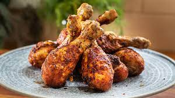

Kjúklingur að hætti Margrétar

Þessa bragðgóðu vængi er auðvelt að elda
Innihaldsefni
- kjúklingaleggir
- Salt og pipar
- olía
- eðal kjúklingakrydd
Skref
Setjið leggina i eldfast mót
Penslið leggina með olíu
kryddið med salt og pipar og auðvitað eðal kjúklingakryddi
bakid í ofni við 180˚ C í a.m.k 45 mínútur